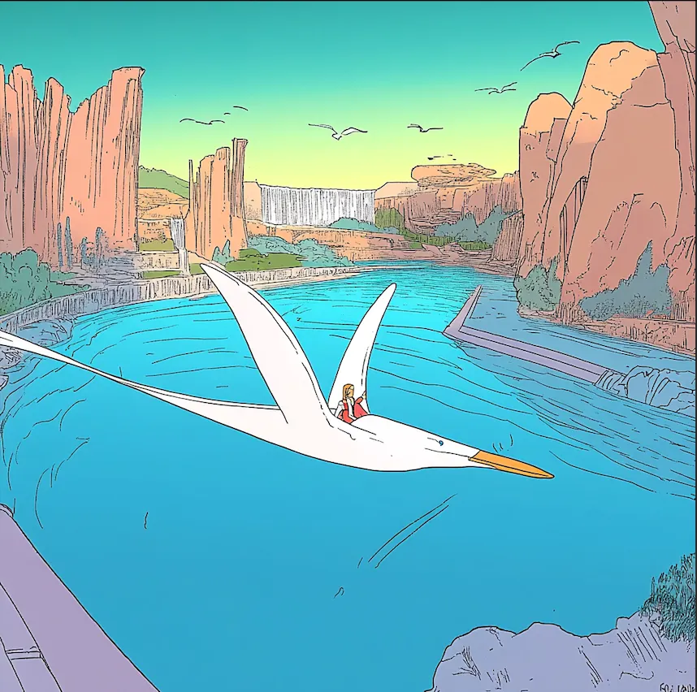
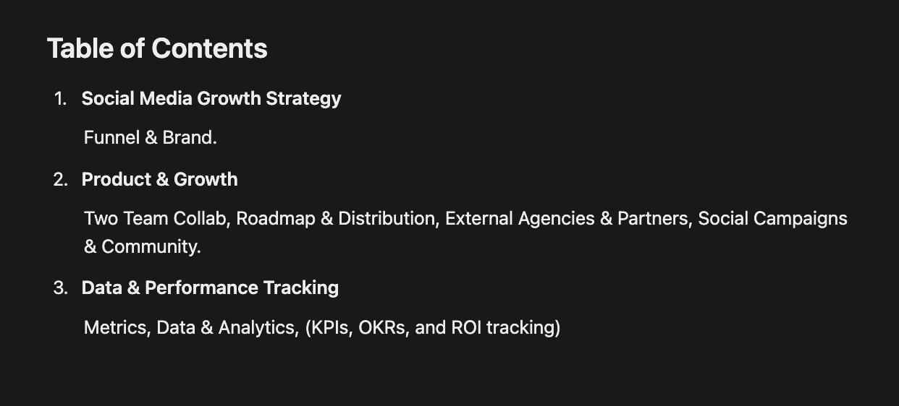
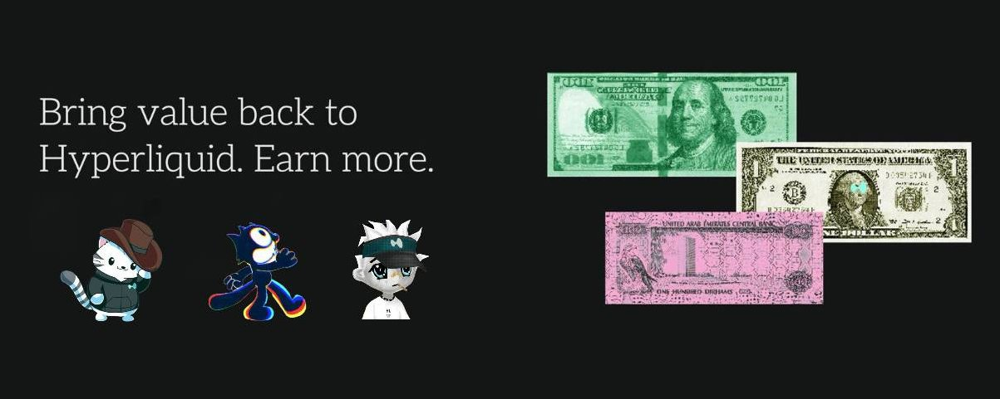
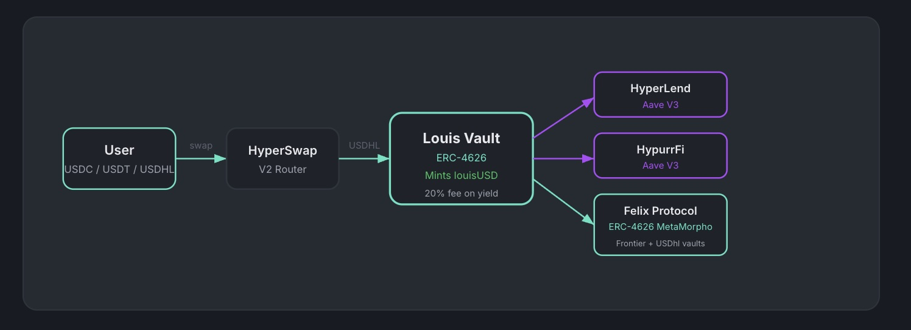
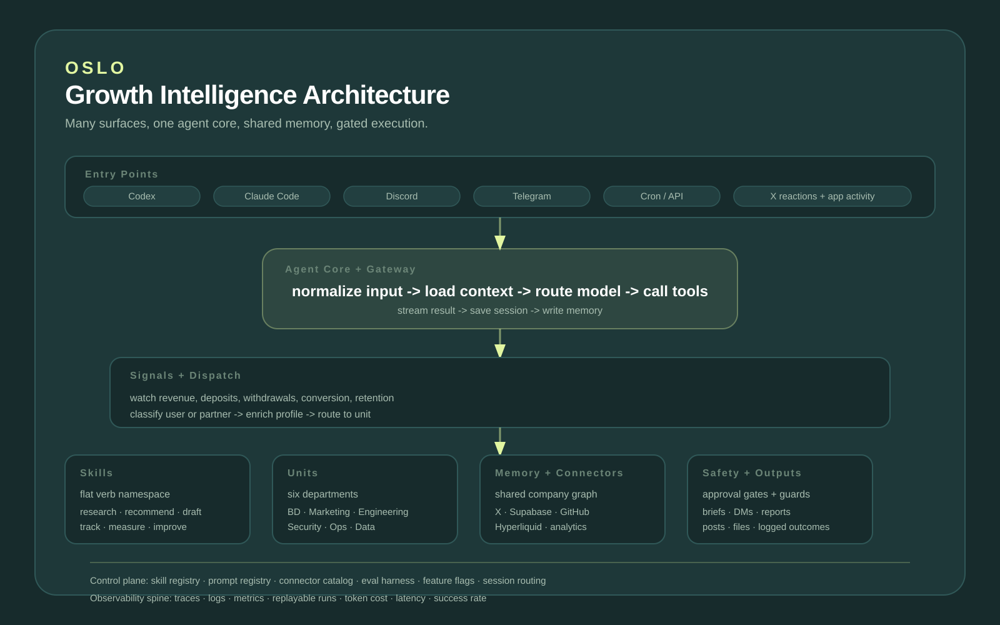

↩ Index
18 June, 2026
Research
Writing, AI systems, and technical exploration that do not belong to a single product or campaign section.
Technical Writing
This section is for the thinking layer: protocol research, market notes, growth frameworks, and technical explanations that sit outside the specific Hyperliquid, Harmonix, or Persona case studies.
A public article about stablecoins and DeFi market structure, framed as writing rather than product or campaign work. The piece uses a broader market lens to explain why crypto-native financial rails can compete with fiat-based yield and distribution.

DeFi Today · 2024 · Open original
A compact operating map for marketing a crypto protocol organically: social growth, funnel design, brand positioning, product distribution, partner and agency coordination, community incentives, and data-led performance tracking.

Growth Strategy · 2025 · Open original
An article about Felix, a CDP protocol built on HyperEVM, and how its launch of spot stocks and equities extended the Hyperliquid ecosystem into a broader onchain market surface.

Felix and Spot Equities · Jul 2025 · Open original
A research note on 24/7 perpetual markets on Hyperliquid: how always-on synthetic exposure can be built through Hyperliquid's matching engine, oracle-driven pricing, margin design, and liquidity rails rather than relying on traditional market hours.
24/7 Perps on Hyperliquid · Mar 2026 · Open original
AI Agents and Systems
AI agent work focused on research and data tracking across social media, BD partnerships, engineering documentation, market signals, company workflows, and the operating knowledge that usually stays scattered across teams.
A HyperEVM protocol experiment around vault routing and lending-market architecture, shown here as the system diagram itself: user flow, swap routing, the Louis Vault, and downstream integrations across HyperLend, HypurrFi, and Felix.

Louis · 2025 · Open original
A simplified architecture view for an AI agent system where Hermes turns company memory, engineering documentation, tasks, reviews, BD context, operations, and security workflows into a repeatable operating layer.

Oslo and Hermes · 2026 · Open original